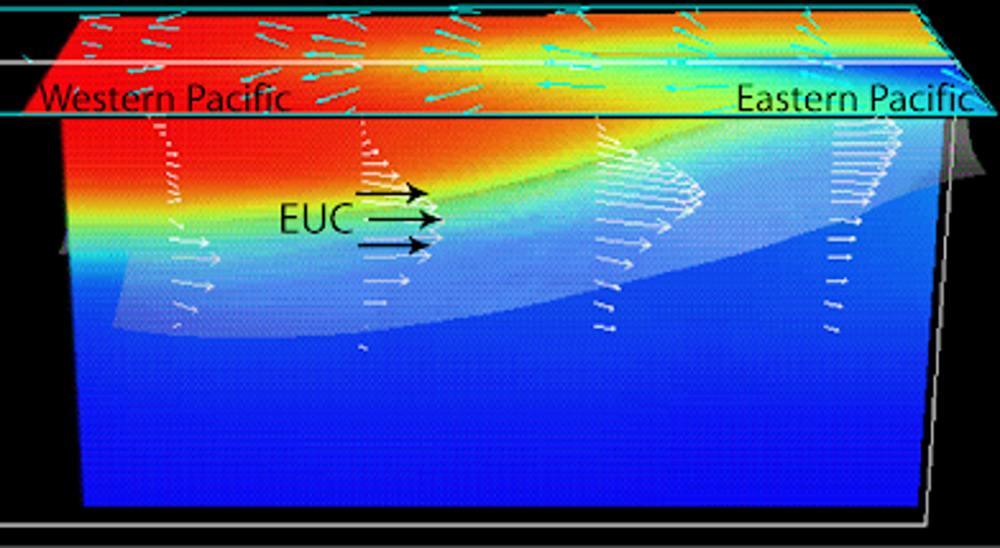
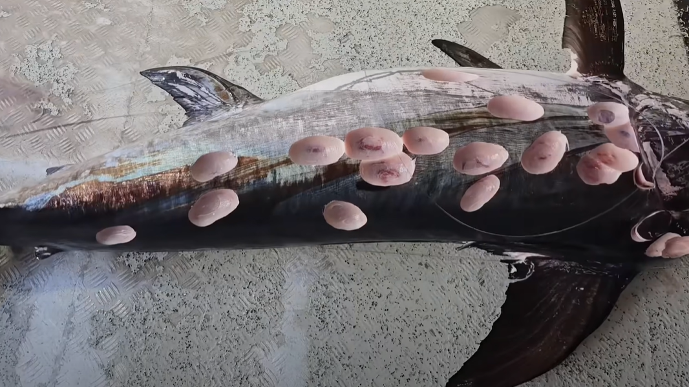

Lecture 10 – Surface and Abyssal Circulation
Ocean Surface Currents
Origin of ocean surface current: in a simplistic case, surface currents develop from friction between the ocean and the wind that blows across its surface. Only about 2% of the wind’s energy is transferred to the ocean surface, you can simulate this on a tiny scale simply by blowing gently and steadily across a cup of coffee. If there were no continents on Earth, the surface currents would generally follow the major wind belts of the world. If there were no continents on Earth, the surface currents would generally follow the major wind belts of the world. Other main factors that influence surface current patterns include gravity, friction, and the Coriolis effect.
Subtropical Gyres and Surface Currents from Essentials of Oceanography, Trujillo and Thurman
| Pacific Ocean | Atlantic Ocean | Indian Ocean |
|---|---|---|
|
North Pacific (Turtle) Gyre North Pacific Current California Currenta North Equatorial Current Kuroshio (Japan) Currentb South Pacific (Heyerdahl) Gyre South Equatorial Current East Australian Currentb West Wind Drift Peru (Humboldt) Currenta Other Major Currents Equatorial Countercurrent Alaskan Current Oyashio Current |
North Atlantic (Columbus) Gyre North Atlantic Current Canary Currenta North Equatorial Current Gulf Streamb South Atlantic (Navigator) Gyre South Equatorial Current Brazil Currentb West Wind Drift Benguela Currenta Other Major Currents Equatorial Countercurrent Florida Current East Greenland Current Labrador Current Falkland Current |
Indian Ocean (Majid) Gyre South Equatorial Current Agulhas Currentb West Wind Drift West Australian Currenta Other Major Currents Equatorial Countercurrent North Equatorial Current Leeuwin Current Somali Current |
a Denotes an eastern boundary current of a gyre, which is relatively slow, wide, and shallow (and is also a cold-water current).
b Denotes a western boundary current of a gyre, which is relatively fast, narrow, and deep (and is also a warm-water current).
The Equatorial Undercurrent
In mid-latitudes the gyres are existing in all the basins, and may be understood as the direct response to the curl of the wind stress. In the equatorial regions the currents also display some robust and distinctive features. The main features are:- A shallow westward flowing surface current, typically confined to the upper 50 m or less, strongest within a few degrees of the equator, although not always symmetric about the equator. Its speed is typically a few tens of centimetres per second.
- A strong coherent eastward undercurrent extending to about 200 m depth, confined to within a few degrees of the equator. Its speed is up to a metre per second or a little more, and it is this current that dominates the vertically integrated transport at the equator. Beneath the undercurrent the flow is relatively weak.
- Westward flow on either side of the undercurrent, with eastward countercurrents poleward of this. In the Pacific the countercurrent is strongest in the Northern Hemisphere where it reaches the surface.
Beneath the surface, underneath the westward-moving SEC, there exists a strong eastward-flowing current known as the Equatorial Undercurrent (EUC). The EUC flows opposite to the direction of the trade winds, has a velocity of approximately 1 m/s, and is located within the thermocline. It is about 200 kilometers wide and 100 meters deep.
Heavy arrows below the ocean surface represent the following processes:
- upwelling along the equator
- poleward Ekman divergence on either side of the equator
- equatorward return flow at a few hundred meters depth to replenish the surface-diverging water
(The Equatorial Current System in the Pacific.
Credit: George S. Philanderlast.)
While the midlatitude ocean is warmest during the (Northern Hemisphere) summer and coldest in winter,
the tropical ocean experiences its warmest period around March–April and its coolest period
around September–October.
Along the equator, deviations from the annual mean sea surface temperature (SST)
clearly propagate westward, with most of the annual amplitude concentrated in
the eastern third of the tropical Pacific Ocean.The largest seasonal variations in SST occur in the eastern Pacific, where temperatures reach their lowest during the Northern Hemisphere fall and winter. 
( Side view of the equatorial Pacific showing the Equatorial Undercurrent flowing east along the thermocline with temperature and velocity.
Note the upward tilt of the EUC from the western to the eastern Pacific.
Credit: NOAA Coral Reef Ecosystem Division – Mission Blog.)
Squids Found in the Stomachs of Sperm Whales
Imprints or scars from squid suckers have been found on the skin of sperm whales and even in their stomach. Although only a few giant-squid beaks may be found in a sperm whale's stomach along with hundreds of beaks from other squid species, the sheer size of a single giant squid may take up a third of the volume of a whale's stomach.  Battle of the Titans.Antarctic Circumpolar Current
The Antarctic Circumpolar Current (ACC) is a strong nearly zonal flow in the Southern Ocean. The ACC is unique because:- It has no zonal boundaries to inhibite the zonal flow.
- There are no meridional sidewalls to create frictions like in Munk's model.
(South polar view of Earth showing
Antarctic surface circulation.
Credit: Essentials of Oceanography, Trujillo and Thurman.)
Bonus: Cookiecutter Shark
With large prey, the cookiecutter shark latches onto their body and spins, removing large plugs of tissue. This ice cream scoop-like action removes a very distinctive circular chunk of flesh from the larger ‘host’. (Photo of Cookiecutter Shark bites on Swordfish at various scar stages.
Credit: Courtesy of TK Walker (screenshot from YouTube).)
Can lead to some anxiety.